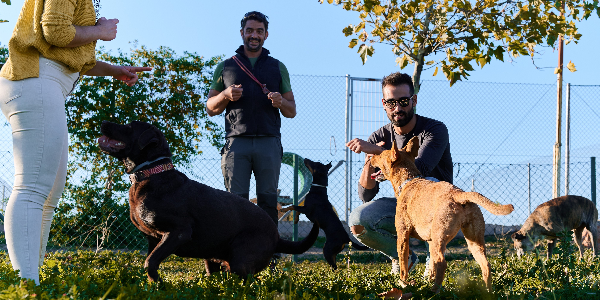

Dog Play Date!
Get ready for a tail-wagging good time! Cairnsville Veterinary Care is excited to announce a Dog Play Date on the first Sunday of July. Join us for a fun-filled gathering where your furry friends can socialise, play, and make new pals.Event Details:
Date:Saturday 4th May 2024
Time:Starting at 9 am
Location:Cairnsville Veterinary Care
What to Expect:
- Engaging activities for dogs of all sizes
- Safe and supervised play environment
- Opportunities for socialisation and making new furry friends
Don't miss out on this pawsitively delightful event! Mark your calendars and let your dogs enjoy a fantastic play date at Cairnsville Veterinary Care.
Our Pet Services Article:
"Dogs, known for their loyal and social nature, thrive in environments that allow them to interact with fellow furry companions. Dog playdates, organised gatherings where dogs can engage in social activities, offer a plethora of advantages for both the dogs and their owners. Here, we explore the benefits of incorporating regular playdates into your canine's routine."Socialisation:
Dogs are inherently social animals, and playdates provide invaluable opportunities for them to refine their social skills. Regular interaction with other dogs helps reduce the risk of behavioural issues, fostering a well-rounded and sociable pet.
Physical Exercise:
Engaging in playful activities during dog playdates ensures that your furry friend gets the physical exercise essential for maintaining overall health. Regular exercise contributes to weight management and cardiovascular well-being.
Mental Stimulation:

Interacting with their canine counterparts during playdates stimulates dogs mentally. This mental enrichment is crucial for preventing boredom and promoting cognitive health.
Behavioural Development:
Dogs learn from each other, especially during play. Playdates can positively influence behaviour, teaching valuable lessons in sharing, communication, and problem-solving.
Stress Reduction:

Just as in humans, stress is a concern for dogs. Playdates offer a stress-free environment where dogs can relax, socialise, and engage in activities that contribute to lower anxiety levels.
Bonding for Owners:
Dog playdates not only benefit the dogs but also provide an opportunity for owners to connect, share experiences, and build a sense of community. The shared joy of watching furry friends play fosters camaraderie among dog owners.
Observation of Play Styles:
Owners can use playdates to observe their dog's play style and interactions. This insight helps identify any potential issues, preferences, or adjustments needed in the play environment.
Energy Release:
Energetic breeds, in particular, benefit from playdates as they offer a controlled space for releasing excess energy. This can reduce the likelihood of dogs exhibiting destructive

Annual Wellness Check-Up
The package includes the following services:
- Physical Examination: A thorough examination of your pet's overall health, including checking for any signs of illness, abnormalities, or discomfort.
- Vaccinations: Ensuring that your pet's vaccinations are up-to-date based on their age, health status, and lifestyle.
- Parasite Control: Assessment and preventive measures against common parasites like fleas, ticks, and worms.
- Dental Check-Up: Evaluation of your pet's dental health, including checking for signs of dental disease and providing advice on dental care. Nutritional Guidance: Discussion about your pet's diet, nutritional needs, and recommendations for maintaining a healthy weight.
- Blood Tests or Laboratory Work (if necessary): Additional diagnostic tests may be recommended based on your pet's age, breed, or specific health concerns.
Our Vet Services
"With over 20 years of experience in veterinary care, we pride ourselves on offering friendly, reliable, and compassionate services."Consultations
Consultations are available via appointment 7 days per week. Cairnville Veterinary Clinic consults from 8.30am to 6.30pm Monday to Friday and Saturdays/Sundays and Public Holidays from 8.30am to 1pm. Gordonvale Veterinary Surgery consults from 9am to 5pm Monday to Friday and Saturdays from 8.30am to 12pm.
House Services
Cairnville Veterinary Clinics’ house call service provides veterinary care for your pets in the comfort of your own home. Available via appointment from either of our locations, house calls can be made at any time subject to availability.
Dental Care
Equipped with a dedicated dental x-ray unit, we are able to diagnose painful problems in your pet’s mouth that would otherwise be missed. Dental radiographs help us to determine whether teeth might be abnormal, missing, non-vital or malpositioned and able us to perform a thorough assessment of the teeth and surrounding soft tissues. Our clinics have modern dental equipment available and our veterinary surgeons regularly perform nerve blocks to ensure your pet stays comfortable. Using this equipment we can perform prophylactic clean/scale/polishes, as well as extractions and more involved oral surgery.
Surgical Services
Cairnville Veterinary Clinic has an extensive range of surgical facilities allowing us to treat a range of problems in-house without the need for referral. We use modern equipment, anaesthetics and pain management to ensure that your pet’s procedure is as safe and comfortable as possible. We offer orthopaedic, soft tissue, desexing, ophthalmic, and emergency surgical services, amongst others.
Anaesthesia
At Cairnville Veterinary Clinic we offer the best and safest options available to minimise any risk whilst your pet is under anaesthetic. Your pet’s age, breed, health and anaesthetic history will determine what choice of anaesthetic we select. All pets are monitored carefully whilst under anaesthetic and during recovery. Our experienced veterinary nurses monitor your pet closely and combined with our extensive anaesthetic monitoring equipment this ensures that your pet experiences the best anaesthetic possible.
I/V Fluid Therapy
As a standard, all animals undergoing general anaesthesia will be placed on intravenous fluids for the duration of their procedure. Anaesthetics reduce circulation to vital organs which can result in permanent damage. Administering Intravenous fluids during anaesthesia helps to maintain blood pressure and supports the blood flow to vital organs. Administering Intravenous fluids also makes the procedure safer and speeds up recovery from anaesthesia. Having a catheter in place also ensures that in the event of an emergency, our veterinarians have immediate access to your pet’s bloodstream ensuring emergency medications can be given rapidly.
Microchipping
Our modern, pet-specific x-ray machine, combined with the latest digital x-ray technology gives us clearer x-rays in a shorter timeframe than ever before. Combined with a physical examination and your pet’s history, radiographs are used to assist our veterinarians in diagnosing and treating your pet. Cairnville Veterinary Clinic has an arrangement with overseas radiography specialists to organise rapid, specialist second opinions on x-rays if required.
Orthopaedic Surgery
Orthopaedic surgery involves any surgery that is related to bones or joints. Our extensive range of surgical facilities and veterinarian expertise allows us to perform many orthopaedic surgical procedures including amputations, cruciate surgery and fracture repairs. We are also able to organize referrals to a specialist orthopaedic surgeon if necessary.